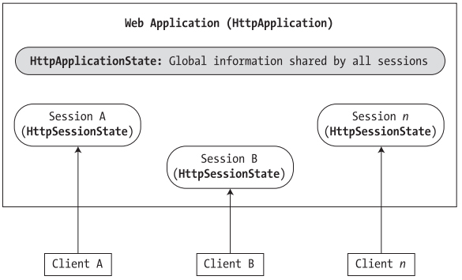
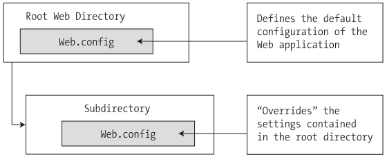

Chapter 24 - ASP.NET 2.0 Web applications
Content
This chapter addresses the all important topic of state management. Here you will learn the role of view state, control state, and session- and application-level variables, as well as a state-centric entity provided by ASP.NET termed the application cache.
Once you have a solid understanding of the state management techniques offered by the .NET platform, the chapter wraps up with a discussion of the role of the Web.config file and shows various configuration-centric techniques.
The issue of state
Because HTTP is a stateless wire protocol, so it makes web development extremely different from the process of building an executable assembly. For example, when you are building a Windows Forms application, you can rest assured that
any member variables defined in the Form-derived class will typically exist in memory until the user explicitly shuts down the executable:
public partial class MainWindow : Form
{
private string userFavoriteCar;
...
}
However, HTTP has no clue how to automatically remember data once the HTTP response has been sent, it stands to reason that the Page object is destroyed instantly. Therefore, when the client posts back to the *.aspx file,
a new Page object is constructed that will reset any page-level member variables. This is clearly a major dilemma. Imagine how painful online shopping would be if every time you posted back to the web server, any and all information you previously entered
(such as the items you wish to purchase) were discarded. When you wish to remember information regarding the users who are logged on to your site, you need to make use of various state management techniques.
ASP.NET state management techniques
ASP .NET provides several mechanisms that you can use to maintain stateful information in your web applications. Specifically, you have the following options:
- Make use of ASP.NET view state.
- Make use of ASP.NET control state.
- Define application-level variables.
- Define session-level variables.
- Make use of the cache object.
- Interact with cookie data.
Understanding the role of ASP.NET View State
Under ASP.NET, we are no longer required to manually scrape out and repopulate the values contained within the HTML widgets because the ASP.NET runtime will automatically embed a hidden formfield (named __VIEWSTATE), which will flow between the browser and a specific page.
The data assigned to this field is a Base64-encoded string that contains a set of name/value pairs that represent the values of each GUI widget on the page at hand.
The System.Web.UI.Page base class's Init event handler is the entity in charge of reading the incoming values found within the __VIEWSTATE field to populate the appropriate member variables in the derived class.
Also, just before the outgoing response is emitted back to the requesting browser, the __VIEWSTATE data is used to repopulate the form's widgets, to ensure that the current values of the HTML widgets appear as they did prior to the previous postback.
Furthermore, view state is most useful when you have a dynamically populated web widget that always needs to be repopulated for each and every postback (such as an ASP.NET GridView, which is always filled using a database hit).
If you did not disable view state for pages that contain such widgets, the entire state of the grid is represented within the hidden __VIEWSTATE field.
Given that complex pages may contain numerous ASP .NET web controls, you can imagine how large this string would become.
As the payload of the HTTP request/response cycle could become quite heavy, this may become a problem for the dial-up web surfers of the world. In cases such as these, you may find faster throughput if you disable view state for the page.
To disable view state for the page, set value for enableViewState attribute of <%@Page%> directive to false. Default value of this attribute is true.
If the idea of disabling view state for the entire *.aspx file seems a bit too aggressive, recall that every descendent of the System.Web.UI.Control base class inherits the EnableViewState property, which makes it very simple to disable view state on a control-by-control basis:
<asp:GridView id="myHugeDynamicallyFilledDataGrid" runat="server" EnableViewState="false">
</asp:GridView>
Be aware that ASP.NET pages reserve a small part of the __VIEWSTATE string for internal use. Given this, you will find that the __VIEWSTATE field will still appear in the client-side browser even when the entire page (and all the controls) have disabled view state.
Adding custom View State data
In addition to the EnableViewState property, the System.Web.UI.Control base class also provides an inherited property named ViewState. Under the hood, this property provides access to a System.Web.UI.StateBag type,
which represents all the data contained within the __VIEWSTATE field. Using the indexer of the StateBag type, you can embed custom information within the hidden __VIEWSTATE form field using a set of name/value pairs. Here’s a simple example:
protected void btnAddToVS_Click (object sender, EventArgs e)
{
ViewState["CustomViewStateItem"] = "Some user data";
lblVSValue.Text = (string)ViewState["CustomViewStateItem"];
}
Because the System.Web.UI.StateBag type has been designed to operate on any type-derived System.Object, when you wish to access the value of a given key, you will need to explicitly cast it into the correct underlying data type (in this case, a System.String).
Be aware, however, that values placed within the __VIEWSTATE field cannot literally be any object. Specifically, the only valid types are strings, integers, Booleans, ArrayLists, Hashtables, or an array of these types.
Most of the time, custom view state data is best suited for user-specific preferences. For example, you may establish a point of view-state data that specifies how a user wishes to view the UI of a GridView (such as a sort order).
View state data is not well suited for full-blown user data, such as items in a shopping cart, cached DataSets, or whatnot. When you need to store this sort of complex information, you are required to work with session data.
Control State
As of ASP .NET 2.0, a control's state data can now be persisted via control state rather than view state. This technique is most helpful if you have written a custom ASP.NET web control that must remember data between round-trips.
While the ViewState property can be used for this purpose, if view state is disabled at a page level, the custom control is effectively broken. For this very reason, web controls now support a ControlState property.
Control state works identically to view state; however, it will not be disabled if view state is disabled at the page level.
Understanding the Application/Session
Under ASP .NET, application state is maintained by an instance of the HttpApplicationState type. This class enables you to share global information across all users (and all pages) who are logged on to your ASP.NET application.
Not only can application data be shared by all users on your site, but also if one user changes the value of an application-level data point, the change is seen by all others on their next postback.
On the other hand, session state is used to remember information for a specific user (again, such as items in a shopping cart). Physically, a user's session state is represented by the HttpSessionState class type.
When a new user logs on to an ASP.NET web application, the runtime will automatically assign that user a new session ID, which by default will expire after 20 minutes of inactivity. Thus, if 20,000 users are logged on to your site, you have 20,000 distinct HttpSessionState objects,
each of which is assigned a unique session ID.
The relationship between a web application and web sessions is shown in the below figure.

Maintaining Application-Level state data
The HttpApplicationState type enables developers to share global information across multiple sessions in an ASP.NET application. For example, you may wish to maintain an applicationwide connection string that can be used by all pages, a common DataSet used by multiple pages, or
any other piece of data that needs to be accessed on an applicationwide scale. The below table describes some core members of this type.
| AllKeys |
This property returns an array of System.String types that represent all the names in the HttpApplicationState type. |
| Count |
This property gets the number of item objects in the HttpApplicationState type. |
| Add() |
This method allows you to add a new name/value pair into the HttpApplicationState type.
Do note that this method is typically not used in favor of the indexer of the HttpApplicationState class.
|
| Clear() |
This method deletes all items in the HttpApplicationState type. This is functionally equivalent to the RemoveAll()method. |
| Lock() |
These two methods are used when you wish to alter a set of application variables in a thread-safe manner. |
| Unlock() |
| RemoveAll() |
These methods remove a specific item (by string name) within the HttpApplicationState type.
RemoveAt() removes the item via a numerical indexer.
|
| Remove() |
| RemoveAt() |
Syntax to declare an Application variable:
Application["variable_name"]
There is example of setting up some application variables.
Application["SalesPersonOfTheMonth"] = "Chucky";
Application["CurrentCarOnSale"] = "Colt";
Application["MostPopularColorOnLot"] = "Black";
Like the ViewState property, notice how you must cast the value returned from the HttpApplicationState type into the correct underlying type.
Now, given that the HttpApplicationState type can hold any type, it should stand to reason that you can place custom types (or any .NET type) within your site's application state.
Maintaining Session Data
A session is little more than a given user's interaction with a web application, which is represented via the HttpSessionState type. To maintain stateful information for a particular user,
the HttpApplication-derived type and any System.Web.UI.Page-derived types may access the Session property.
The classic example of the need to maintain per-user data would be an online shopping cart. Again, if ten people all log on to an online store, each individual will maintain a unique set of items that she (may) intend to purchase.
When a new user logs on to your web application, the .NET runtime will automatically assign the user a unique session ID, which is used to identify the user in question.
Each session ID is assigned a custom instance of the HttpSessionState type to hold on to user-specific data. Inserting or retrieving session data is syntactically identical to manipulating application data, for example:
Session["DesiredCarColor"] = "Green";
string color = (string) Session["DesiredCarColor"];
The HttpApplication-derived type allows you to intercept the beginning and end of a session via the Session_Start() and Session_End() event handlers.
Within Session_Start(), you can freely create any per-user data items, while Session_End() allows you to perform any work you may need to do when the user's session has terminated.
The HttpSessionState type also defines a set of members that control the expiration policy of the current session. Again, by default each user has 20 minutes of inactivity before the HttpSessionState object is destroyed.
Thus, if a user enters your web application (and therefore obtains a unique session ID), but does not return to the site within 20 minutes, the runtime assumes the user is no longer interested and destroys all session data for that user.
You are free to change this default 20-minute expiration value on a user-by-user basis using the Timeout property. The most common place to do so is within the scope of your Global.Session_Start()method:
protected void Session_Start(Object sender, EventArgs e)
{
Session.Timeout = 5;
Session["UserShoppingCartInfo"] = new UserShoppingCart();
}
The role of the Global.asax file
Global.asax is a file that contains event handlers to interact with application-level and session-level events. The below table documents the role of each event.
| Application_Start() |
This event handler is called the very first time the web application is launched. Thus, this event will fire exactly once over the lifetime of a web application.
This is an ideal place to define application-level data used throughout your web application.
|
| Application_End() |
This event handler is called when the application is shutting down. This will occur when the last user times out or if you manually shut down the application via IIS.
|
| Session_Start() |
This event handler is fired when a new user logs on to your application. Here you may establish any user-specific data points. |
| Session_End() |
This event handler is fired when a user's session has terminated (typically through a predefined timeout). |
| Application_Error() |
This is a global error handler that will be called when an unhandled exception is thrown by the web application. |
Working with the Application Cache
ASP.NET provides a second and more flexible manner to handle applicationwide data. As you recall, the values within the HttpApplicationState object remain in memory as long as your web application is alive and kicking.
Sometimes, however, you may wish to maintain a piece of application data only for a specific period of time. For example, you may wish to obtain an ADO.NET DataSet that is valid for only five minutes.
After that time, you may want to obtain a fresh DataSet to account for possible user modifications.
While it is technically possible to build this infrastructure using HttpApplicationState and some sort of handcrafted monitor, your task is greatly simplified using the ASP.NET application cache.
As suggested by its name, the ASP .NET System.Web.Caching.Cache object (which is accessible via the Context.Cache property) allows you to define an object that is accessible by all users (from all pages) for a fixed amount of time.
In its simplest form, interacting with the cache looks identical to interacting with the HttpApplicationState type:
Context.Cache["SomeStringItem"] = "This is the string item";
string s = (string)Context.Cache["SomeStringItem"];
The System.Web.Caching.Cache class defines only a small number of members beyond the type's indexer. For example, the Add()method can be used to insert a new item into the cache that is not currently defined
(if the specified item is already present, Add() does nothing).
The Insert()method will also place a member into the cache. If, however, the item is currently defined, Insert() will replace the current item with the new type.
Reads example of Data caching at page 902 of textbook.
Understanding Cookies
The final state management technique examined here is the act of persisting data within cookie, which is often realized as a text file (or set of files) on the user's machine.
When a user logs on to a given site, the browser checks to see if the user's machine has a cookie file for the URL in question and, if so, appends this data to the HTTP request.
The exact location of your cookie files will depend on which browser you happen to be using. For those using Microsoft Internet Explorer, cookies are stored by default under C:\Documents and
Settings\<loggedOnUser>\Cookies.
The contents of a given cookie file will obviously vary among URLs, but keep in mind that they are ultimately text files. Thus, cookies are a horrible choice when you wish to maintain sensitive information about the current user (such as a credit card number, password, or whatnot).
Even if you take the time to encrypt the data, a crafty hacker could decrypt the value and use it for purely evil pursuits.
Understand that ASP.NET cookies can be configured to be either persistent or temporary. A persistent cookie is typically regarded as the classic definition of cookie data,
in that the set of name/value pairs is physically saved to the user's hard drive.
Temporary cookies (also termed session cookies) contain the same data as a persistent cookie, but the name/value pairs are never saved to the user's machine; rather, they exist only within the HTTP header.
Once the user logs off your site, all data contained within the session cookie is destroyed.
Most browsers support cookies of up to 4,096 bytes. Because of this size limit, cookies are best used to store small amounts of data, such as a user ID that can be used to identify the user and pull details from a database.
The System.Web.HttpCookie type is the class that represents the server side of the cookie data (persistent or temporary). When you wish to create a new cookie, you access the Response.Cookies property.
Once the new HttpCookie is inserted into the internal collection, the name/value pairs flow back to the browser within the HTTP header.
To interact with the incoming cookie data under ASP.NET, access the HttpRequest.Cookies property. Recall that the browser is the entity in charge of accessing persisted cookies when navigating to a previously visited page.
Configuring ASP.NET Web application using Web.config
Web-centric configuration files for ASP.NET web applications, are always named Web.config. Like any *.config file, Web.config defines the root-level <configuration> element.
Nested within the root is the <system.web> element, which can contain numerous subelements used to control how your web application should behave at runtime.
Under ASP.NET, the Web.config file can be modified using any text editor. The below table outlines some of the subelements that can be found within a Web.config file.
| <appSettings> |
This element is used to establish custom name/value pairs that can be programmatically read in memory for use by your pages. |
| <authentication> |
This security-related element is used to define the authentication mode for this web application. |
| <authorization> |
This is another security-centric element used to define which users can access which resources on the web server. |
| <compilation> |
This element is used to enable (or disable) debugging and define the default .NET language used by this web application,
and it may optionally define the set of external .NET assemblies that should be automatically referenced.
|
| <connectionStrings> |
This element is used to hold external connection strings used within this website. |
| <customErrors> |
This element is used to tell the runtime exactly how to display errors that occur during the functioning of the web application. |
| <globalization> |
This element is used to configure the globalization settings for this web application. |
| <sessionState> |
This element is used to control how and where session state data will be stored by the .NET runtime. |
| <trace> |
This element is used to enable (or disable) tracing support for this web application. |
Reads enabling tracing at page 913, and customizing Error output at page 914 of textbook.
Configuration inheritance
Last but not least is configuration inheritance. As you learned in the previous chapter, a web application can be defined as the set of all files contained within a root directory and any optional subdirectories.
All the example applications in this and the previous chapter have existed on a single root directory managed by IIS (with the optional Bin folder). However, large-scale web applications tend to define numerous subdirectories off the root,
each of which contains some set of related files. Like a traditional desktop application, this is typically done for the benefit of us mere humans, as a hierarchal structure can make a massive set of files more understandable.
When you have an ASP.NET web application that consists of optional subdirectories off the root, you may be surprised to discover that each subdirectory may have its own Web.config file!
By doing so, you allow each subdirectory to override the settings of a parent directory. If the subdirectory in question does not supply a custom Web.config file,
it will inherit the settings of the next available Web.config file up the directory structure.

Of course, although ASP.NET does allow you to define numerous Web.config files for a single web application, you are not required to do so.
In a great many cases, your web applications function just fine using nothing else than the Web.config file located in the root directory of the IIS virtual directory.
Summary
In this chapter, you rounded out your knowledge of ASP.NET by examining how to leverage the HttpApplication type. As you have seen,
this type provides a number of default event handlers that allow you to intercept various application- and session-level events.
The bulk of this chapter was spent examining a number of state management techniques. Recall that view state is used to automatically repopulate the values of HTML widgets between postbacks to a specific page.
Next, you checked out the distinction of application- and session-level data, cookie management, and the ASP.NET application cache. Finally, you examined a number of elements that may be contained in the Web.config file.